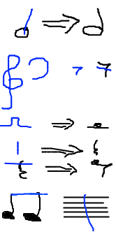

Tu peux écrire des notes ! Pour cela :
- clique
- utilise ton synthé
- Outils, puis Enregistrer à partir du microphone puis siffle
- appuie sur entrée et flèches pour se déplacer dans la partition
Tu peux dessiner aussi :

Pour changer la durée
des notes que tu écris, tu as la palette. Ou alors tape la durée
au clavier, plus précisément la fraction où 1 = une noire. Par exemple, en tapant "1", tu entres des noires. En tapant
"2" tu entres des blanches. En tapant "1" puis "2" (pour 1/2) tu entres
des croches.
Tu peux aussi entrer des silences en appuyant sur "espace".
Tu peux aussi tracer des barres de mesures. Dessine une barre avec la souris !
Tu peux aussi sélectionner afin de faire des opérations compliquées dessus. Pour cela :
- entoure les notes
- ou clique dessus
- ou clique la note du début de la sélection, puis avec Maj appuyé, clique sur la dernière note de ta sélection
- ou au clavier, Maj + flèches
Pour modifier la signature ou une tonalité, double-clique dessus !
Pour beaucoup plus, clique avec le bouton droit pour faire apparaitre un menu magique.
Tu peux ajouter d'autres symboles en glissant-déposant des symboles depuis la palette de gauche.